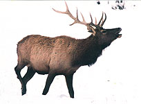
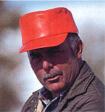
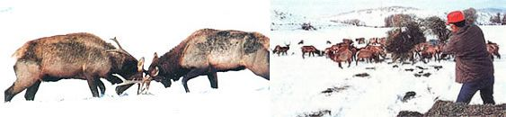

For nearly two decades now, an enterprising Colorado ranching family has been demonstrating that raising wild ungulates for the commercial market is more fun than herding cattle or sheep, and can also be an extremely profitable venture.
At the age of 52, Lou Wyman is everything a half-century of cowboy movies has conditioned us to expect a lifelong western rancher to be-strong, independent, even ruggedly handsome in a Clark Gable sort of way.
And the Wyman ranch - 10,000 acres of lightly timbered Rocky Mountain foothill country perched at 7,000 feet in northwestern Colorado - would also satisfy popular notions as to what such an operation should look like . . . with a cattle-guarded entrance gate located several miles from the nearest paved road; a traditional single-story ranch house furnished with age-darkened antiques; a huge barn with hayloft, its roof sagging with the memory of decades of heavy snows; a log bunkhouse, its interior decorated with hunting trophies and warmed by a cavernous stone fireplace; sprawling pastures watered by a meandering fork of the nearby Yampa River; and a generous assortment of corrals, narrowing chutes, loading ramps, squeezes, and sundry outbuildings - all Wyman-built from locally harvested logs and home-milled lumber.
In fact, about the only thing missing from this otherwise classic Western American Gothic is a lazing herd of lowing cattle. But that's OK, because Lou and Paula Wyman ranch critters that are a heck of a lot more interesting and aesthetic than a bunch of gutbulged cows; the Wyman ranch supports, depending on the season, from 200 to 300 head of wapiti . . . the regal Rocky Mountain elk.
With the help of a single hired hand, Wyman maintains his elk in three separate herds. The first group consists of 60 or so head pastured near ranch headquarters. These animals are about as close to being domesticated as elk are ever likely to come: When Wyman steers his dilapidated flatbed truck into the big, white pasture early each winter morning to distribute the daily supplemental feeding of alfalfa or grass hay, the pampered wapiti fall in behind the motorized feed wagon as obediently as a platoon of army recruits forming up in front of a chow hall.
The second herd - pastured in a more remote area - is wilder, has the run of a good deal more country, and will line out for yon side of the nearest hill at the slightest provocation. The third and largest herd - over 100 adult animals plus their offspring - has close to 1,000 rolling, aspen-timbered acres upon which to roam and graze, and is, in a practical sense, wild.
In addition to wholesaling fresh, organically grown elk meat and distributing their own brand of preservative-free elk jerky, the Wymans have developed a marketing strategy that includes selling live animals, helping to satisfy the oriental craving for an aphrodisiac derived from elk antler in velvet, and outfitting and guiding a few hunters each fall, both on the nearby National Forest and Bureau of Land Management lands and in the hinterlands of the sprawling ranch.
As a matter of fact, hunting is what got Lou Wyman into the elk ranching business in the first place.
For years, Lou had supplemented his ranching income (his family ran some 5,000 head of sheep and cattle) by guiding big-game hunters each fall. He enjoyed guiding, and he enjoyed its monetary rewards. What he didn't enjoy was the shortness of the annual hunting season-averaging just a couple of weeks. Consequently, Wyman began casting about for a way to legally extend the local elkhunting season.
In 1968 - after determining that the state of Colorado had no regulations restricting the private ownership of elk (he would later help write the first of such laws) - Wyman purchased 50 head of wapiti from the Denver Zoo, bought a few more from private sources here and there, and established the largest privately owned elk herd in Colorado. After enclosing 1,500 acres of the ranch with eight-foot-high, "elephant-proof" V-mesh fence, and working out the legalities of operating a game preserve, Wyman was ready to begin hosting paying hunters - anytime he chose.
That was 18 years ago. Today, the Wymans continue to take on a score or so hunters annually - hunters who are both able and willing to pay a premium price to hunt a premium herd that boasts a remarkably high percentage of royal bulls (males having at least six tines, or points, protruding from each main antler beam). However, over the past few years, the Wymans have gradually deemphasized the hunting aspect of their business and have come to depend more on the sale of meat and antlers as their primary source of income.
With a base herd numbering 200 mature elk and a calf yield of 80% a year, the Wymans can harvest more than 100 animals annually. Of this number, about 20 of the largest bulls are taken by hunters, and 6 or 8 cows and young bulls are sold each month for meat. (Rather than do the processing themselves, the Wymans truck their elk to a meat-packing plant in nearby Craig, where the animals are slaughtered under the official eye of a U.S. Department of Agriculture inspector.)
The average adult elk - 600 pounds or so on the hoof - will produce about 350 pounds of butchered meat that sells, wholesale, for $4.00 per pound. After deducting transportation and butchering costs, the Wymans are left with around $900.00 net profit per animal.
While the prime cuts are air-freighted fresh to wholesale restaurant suppliers catering to exclusive eateries, a portion of each animal is shipped to a plant in Utah, where the meat is processed (chopped and formed) into nitrate- and nitrite-free jerky sticks. The jerky is then packaged in plastic tubs of 30 sticks each, labeled, and shipped back to the ranch. From there, Lou and Paula distribute the product to various retail outlets around the country (and as far away as Greenland) via a network of wholesalers.
Most oriental cultures still rely heavily on herbal medicines and other elixirs, and one of the more revered of these is a purported aphrodisiac made from powdered deer, caribou, or elk antler. While just about any antler will do for the more budget-priced of such elixirs, elk antler is demanded by the discerning, and elk antler in velvet is considered to be the Mercedes of aphrodisiac ingredients. And since Korea, China, and the other big consumers of such antler-based potions all suffer a severe shortage of elk, the U.S. has come to be a leading supplier. However, many Americans object to such dealings on the basis that it's cruel to rob a wild ungulate of its antlers.
The Wymans have given a lot of thought to that criticism, but in the final analysis can see nothing cruel or morally wrong in harvesting the antlers of about half of their mature bulls each year, especially when those antlers are worth $45.00 per pound and the head of an average adult bull is adorned with 10 to 15 pounds of the valuable bone . . . which will drop off in March anyhow and - in the dried state - be worth only about $6.00 a pound.
When the time arrives to harvest antlers - usually midsummer - the Wymans herd the selected bulls into a large corral that vents into a narrowing chute, which leads in turn into a cattle squeeze that Lou has modified especially for handling elk. As an animal enters the squeeze, a lever trips and a gate drops down in the rear, preventing the bull from backing up. At the same time, the floor drops out so that the wapiti's body is squeezed by its own weight down into the V-shaped contraption and held firmly but gently in place. Finally, the bull's head is immobilized in a snug collar so that the antlers can be cut without fear of several hundred pounds of uncooperative beast thrashing about and possibly harming either itself or Wyman.
As soon as the antlers have been removed, Lou caps the stumps with paraffin to stop the bleeding, prevent infection, and provide a degree of protection against injury until the wound heals over (which takes only a few days). And since bull elk enjoy fighting during the fall rutting season, Wyman often leaves their brow tines - the two bottom, downward-slanting antler points - in place as eye protection.
The dehorning operation takes a few minutes and apparently causes little, if any, pain to the animals. (The Wymans base this assumption on the fact that elk are highly vocal creatures that don't hesitate to "cry" when frightened or in pain - and the bulls never utter a sound before, during, or after having their antlers trimmed.)
While ranching indigenous ungulates has long been an established business in Africa, it's still a relative oddity here in the U.S., where the meat of wild game is considered by the nonhunting majority to be something less than desirable. Of course, ignorance breeds contempt, and many folks who think they dislike wild meat simply because they've never tried it (as well as those who've eaten hunter-killed game that's been improperly handled or prepared) are in for a delightful surprise if they ever get an opportunity to lay a lip over a lean, organic, Wyman-grown elk roast.
The Wyman Elk Ranch is working proof that big-game ranching can be as financially sound a venture as raising more traditional livestock such as cattle or sheep, and Lou and Paula Wyman enthusiastically testify that it's also a darn sight more fun.
EDITOR'S NOTE: Though they normally market their elk jerky in bulk lots through wholesale distributors, the Wymans have agreed to make the product available directly to hungry (or merely curious) MOTHER readers. To order a tub containing 30 sticks of elk jerky, send $18 (postage paid anywhere in the continental U.S.) to Wyman Elk Ranch, P.O. Box 278, Craig, CO 81626.
Although Lou Wyman runs 200 to 300 head of elk on a sprawling 1,500 acres of prime western ranchland, he firmly believes that just about anyone with a few acres of good pasture, and the wherewithal to erect a strong fence and purchase a small starter herd, can make wapiti ranching pay. In fact, he feels that a person with just a few head of elk can realize a profit that wouldn't be possible with the same number of cattle pastured on the same acreage.
Assuming that you're already equipped with the necessities of tending large livestock - sufficient acreage, hay barn, feeding and watering facilities - the biggest expense involved in converting to an elk operation will be fencing. Elk can, and often do, leap over or bull right through standard barbed wire. The Wymans use an eight-foot-high, V-mesh fence stretched between strong, deepset poles. At current prices, such a fence - assuming you purchase all the materials at retail and hire the work done - could run as much as $5.00 per foot. However, by utilizing the high-tensile-strength, single-strand fencing that's recently become available, and by doing the work yourself, that per foot cost can be reduced considerably.
With a strong, high fence in place, you'll need some elk - which can be purchased from the Wyman ranch, from similar operations around the country, or at the annual wild animal auctions held at Cape Girardeau, Missouri, each fall and at Chamberlain, South Dakota, in late winter. The minimum practical starter herd would consist of one bull and a few cows. With an 80% annual calf return, your herd should grow quickly, and once you have 12 adults and their spring calves, you can begin harvesting an animal per month without decreasing the size of your base herd.
The following prices are representative of what elk sold for at the Cape Girardeau auction in 1985, and are close to what you can expect to pay for starter animals purchased in 1986:
Calves
Spike (immature) bulls
Cows
Bulls
Royal bulls
$400
$500 to $700
$800
$1,000 to $1,100
Up to $1,900
On the average - as detailed in the accompanying article - if you sell your elk for meat, you can figure on netting around $900 per adult cow . . . and several times that amount of profit will accrue from bulls whose antlers are harvested annually for several years before the animals themselves are sold.
And where will you sell your elk meat? According to Wyman, elk is coming to be considered a delicacy by many Americans (it always has been for Europeans), and the demand is growing rapidly. In fact, many restaurants are presently buying frozen, imported New Zealand red deer (a smaller, European relative of the wapiti) and advertising it on their menus as elk, because they can't find a domestic supplier of the real thing.
What about overhead. Elk are more efficient foragers and eat about a third less than cattle; since they're equipped to paw and nose down through deep snow to feed, they're able to provide a higher percentage of their own food in winter. Wapiti are by nature grazers, preferring grasses and tender, new-growth plants, but will browse a wide variety of shrubs in winter.
An adult elk should be able to fend entirely for itself on as little as a couple of acres of good grass during the warmer months. In winter, however, you'll probably have to provide some supplemental feed. The Wymans cut and bale their own alfalfa and grass hay for this purpose . . . and tell of another elk rancher in Illinois who keeps his wapiti winter-fat and happy with corn on the cob.
Because elk are naturally healthy, they're subject to few diseases or parasites, and require little if any veterinary care. The Wymans have experienced no disease in their herd, though they regularly test for brucellons, tuberculosis, and internal parasites. And rather than administering frequent vaccinations or feeding antibiotic supplements, the Wymans protect their animals by providing them with plenty of room to roam, and, in winter, by feeding them on afresh patch of untrampled snow each day.
Although wild elk once roamed most of the United States, they prefer a cool, dry, high-altitude environment such as that found in the mountains and forests of the West, and are not suited to withstand intense heat and high humidity. While there are prosperous private elk ranches operating in the Midwest and as far south as the Texas hill country, the Deep South is pretty much out of the wapiti picture.
Finally and foremost, while wild-game ranching, as well as the selling of elk meat and antlers, is perfectly legal in most states, it's prohibited in some and regulated in various ways in others. Consequently, if you're considering getting into elk, your first move should be to determine the legality of such a venture in your state.
|
 LEFT: Antlers shorn, the bull on the left still defeated his heavily antlered opponent. RIGHT: Capable of grazing by pawing and nosing down through deep snow, and willing to browse a variety of brush, elk require less supplemental feed in winter than do cattle. |
 |
 |